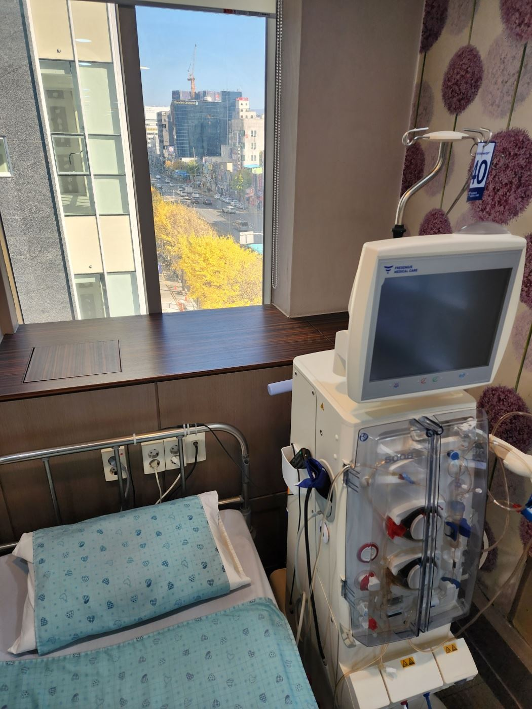
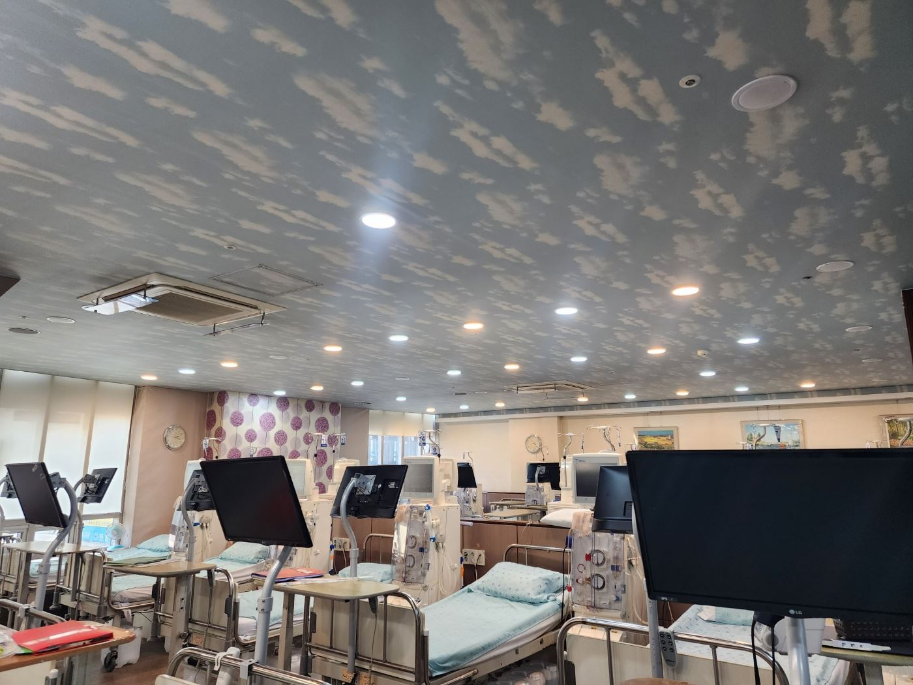

- 홈
- 야간투석
구리 야간투석 — 일과 치료를 함께 이어가는
저녁 시간대 혈액투석
투석 때문에 일을 그만두어야 하는 것은 아닙니다.
조형도내과의원 인공신장실은 낮 시간 투석이 어려운 구리·남양주·다산·중랑구 직장인·학생 환자를 위해 야간투석을 운영합니다.
장비·의료진·기준은 낮 투석과 같습니다.
핵심 요약
- 야간투석은 퇴근 후 저녁 시간대에 받는 혈액투석으로, 주 3회·회당 4시간의 표준 처방을 그대로 유지하면서 낮 시간을 직장·학업에 쓸 수 있게 하는 운영 방식입니다.
- 조형도내과의원 인공신장실(구리시 교문동, 구리역 인근)의 야간투석은 월·수·금 밤 23:00까지 운영합니다.
- 야간에도 독일 FMC 5008S 투석기와 HDF, 신장내과 전문의 관리가 낮과 동일하게 적용되며, 인공신장실은 41병상 규모로 연중무휴 운영합니다.
- 야간 병상은 요일·시간대별로 배정되므로, 인공신장실 직통 031-565-9051~2로 문의하시면 가능한 일정을 안내해 드립니다.
야간투석이란 무엇인가요?
혈액투석은 보통 주 3회, 회당 4시간이 필요합니다. 오전·오후 시간대에 투석을 받으면 주 3일은 사실상 근무가 어렵기 때문에, 많은 투석 환자가 직장을 그만두거나 근무 형태를 바꿉니다. 야간투석은 이 4시간을 퇴근 이후 저녁 시간대로 옮겨 낮 시간을 그대로 쓸 수 있게 하는 운영 방식입니다. 투석 방법·처방·검사가 달라지는 것이 아니라 시간대만 달라지는 것이므로, 야간투석을 받는 분도 낮 투석 환자와 같은 관리를 받습니다.
야간투석이 필요한 분
- 주간에 출근하는 직장인, 자영업자, 학생
- 낮에 가족을 돌봐야 하는 보호자
- 다른 병원의 야간 병상이 없어 낮 투석으로 근무를 조정해 오신 분
- 구리·남양주·다산·중랑구에서 퇴근길에 들르기 편한 인공신장실을 찾는 분
야간투석은 몇 시에 하나요?
조형도내과의원 인공신장실의 야간투석은 월·수·금 밤 23:00까지 운영합니다. 퇴근 후 도착해 4시간 투석을 마치고 귀가하실 수 있는 일정으로, 야간 병상은 요일·시간대별로 배정합니다. 도착 가능 시간이 사람마다 다르므로 시작 시각은 인공신장실 직통 031-565-9051~2로 확인해 주세요.
조형도내과의원 야간투석의 기준
낮 투석과 같은 장비 — 독일 FMC 5008S · HDF
야간 시간대라고 다른 기계, 다른 방식으로 투석하지 않습니다. 모든 병상에 독일 FMC 5008S 혈액여과투석기가 배치되어 있고, 야간투석 환자에게도 혈액투석여과(HDF)를 추가 비용 없이 시행합니다.
연중무휴 운영
인공신장실은 공휴일·명절에도 운영합니다. 야간투석 일정은 요일별로 고정 배정되어 근무 계획을 세우기 쉽습니다.
신장내과 전문의 처방 · 정기 검사
야간투석 환자도 매월 정기 혈액검사(투석 적절도, 빈혈, 칼슘·인, 전해질)를 받고 신장내과 전문의가 처방을 조정합니다. 고혈압·당뇨 등 동반 질환 진료도 함께 이어집니다.
정전 대비 · 안전
1시간 이상의 정전에도 투석이 이어지는 무정전 전원장치(UPS)를 갖추고 있어 야간에도 안심하고 투석받으실 수 있습니다.

야간투석 신청 방법
- 전화 문의 — 인공신장실 직통 031-565-9051~2로 퇴근 후 가능한 도착 시간을 알려 주세요. 야간투석은 월·수·금 23:00까지 운영합니다.
- 병상 배정 — 야간 병상 여유에 따라 요일·시간대를 조율합니다. 대기가 있는 경우 우선 낮 시간대로 시작한 뒤 야간으로 옮기는 방법도 안내해 드립니다.
- 첫 방문 — 다른 병원에서 옮기시는 경우 투석 기록·최근 검사 결과·복용 약 목록·간염 검사 결과를 지참하시면 첫날 바로 투석이 가능합니다.
야간투석 환자가 자주 묻는 질문
야간투석을 하면 투석 효과가 떨어지지 않나요?
아닙니다. 투석 시간(4시간)과 처방이 같다면 시간대에 따른 차이는 없습니다. 오히려 낮에 일하고 저녁에 투석하는 규칙적인 생활이 투석 일정을 빠뜨리지 않는 데 도움이 되는 경우가 많습니다.
투석 후 늦은 시간에 귀가해도 괜찮나요?
투석 직후에는 혈압이 낮아지거나 피로할 수 있으므로 지혈 후 충분히 안정한 뒤 귀가하도록 안내합니다. 운전보다는 대중교통·보호자 동행을 권하며, 구리역·버스정류장이 가까워 이동이 편합니다.
저녁 식사는 언제 하나요?
투석 중 식사는 저혈압을 유발할 수 있어 권하지 않습니다. 퇴근 후 가볍게 식사하고 오시거나, 투석 후 귀가해서 드시는 것이 좋습니다. 개인별 식사·수분 지침은 의료진과 상의하세요.
남양주·중랑구에서 퇴근길에 다닐 수 있나요?
조형도내과의원은 경춘로 대로변(구리역 인근)에 있어 남양주 다산·도농·별내, 서울 중랑구 망우·상봉·신내에서 버스·승용차로 이동하기 편합니다. 지역별 교통은 남양주·다산, 중랑구 안내를 참고하세요.
※ 야간투석 병상은 운영 상황에 따라 대기가 있을 수 있습니다. 시간대·요일은 전화로 확인해 주세요.